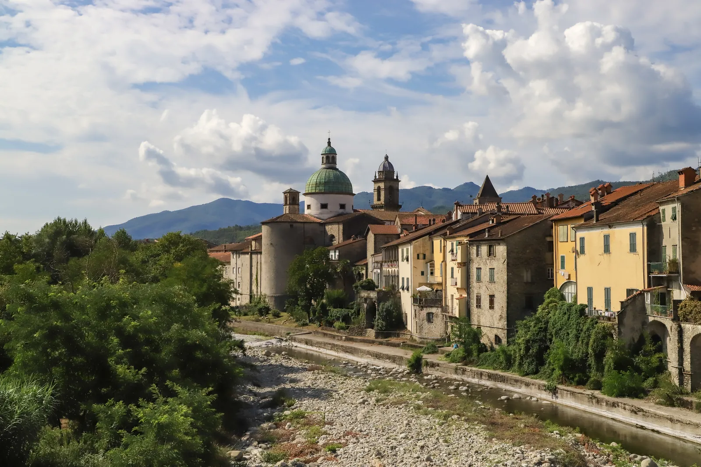
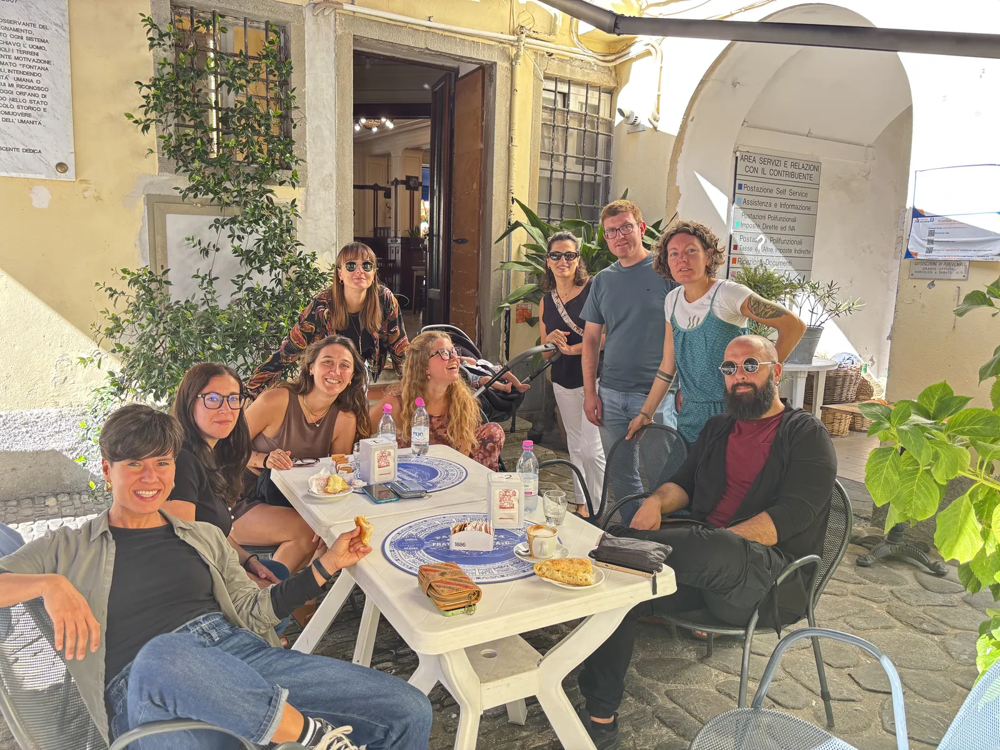
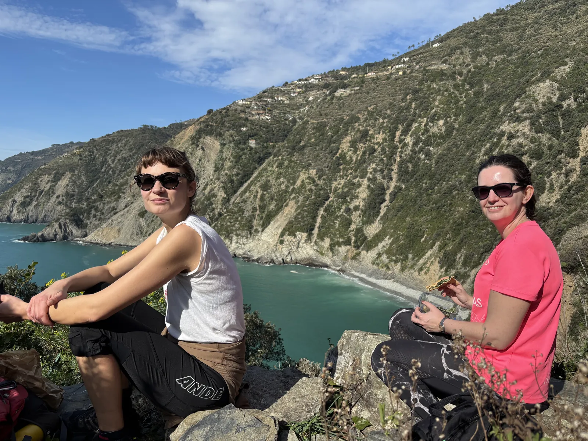
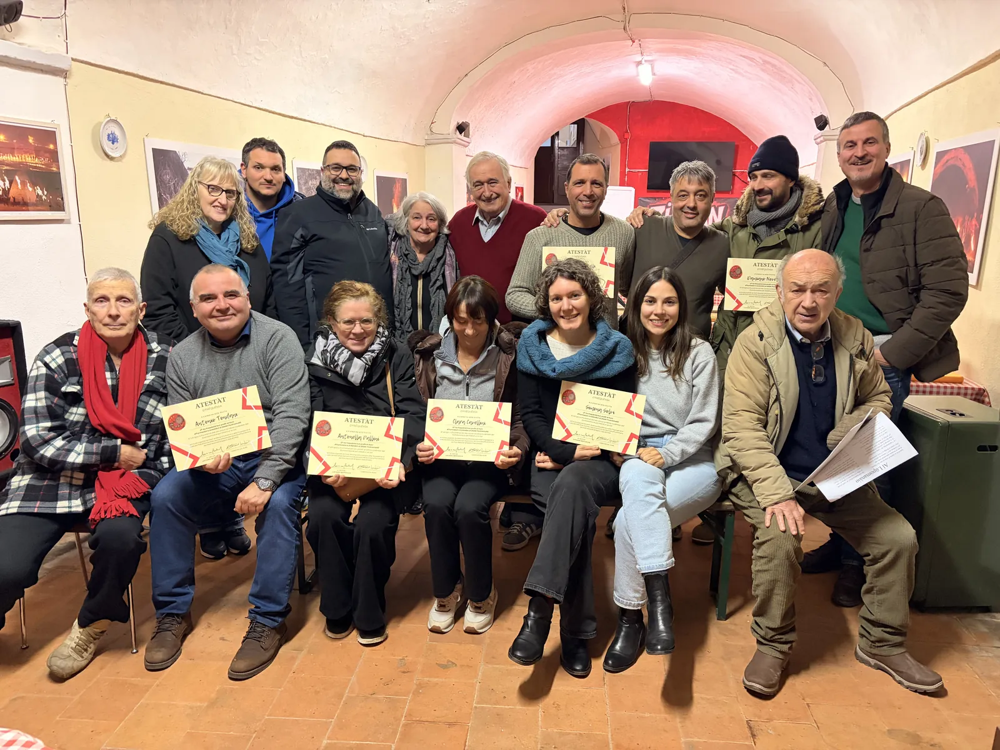

Lavora da un posto che puoi chiamare casa
Una comunità diffusa di lavoratori remoti nel cuore della Toscana selvaggia
Un video vale mille immagini
Guardaci in azione. Poi decidi tu.
Leggi la nostra rassegna stampa:
Come tutto è iniziato
Ottobre 2020. Due pontremolesi si guardano intorno e vedono un paese che si svuota. Le case chiudono, i giovani partono, le botteghe abbassano le saracinesche. Ma vedono anche ciò che il resto del mondo cerca disperatamente. Spazio, silenzio, bellezza, una vita a misura d'uomo.
L'intuizione è semplice e rivoluzionaria. Non serviva portare le persone al lavoro, serviva portare il lavoro alle persone. Nasce così Start Working, un progetto per attrarre lavoratori remoti da tutta Italia e dal mondo intero in un borgo dell'Appennino toscano.
Da allora sono passati oltre quattro anni. Più di 150 persone si sono trasferite qui, da ogni regione italiana e da decine di paesi diversi. Nel 2023 Start Working è diventata un'associazione di promozione sociale (APS), riconosciuta e sostenuta dal Comune di Pontremoli. Non è un'azienda. Non è una startup. È una comunità che ha deciso di riscrivere le regole.
Vuoi conoscere missione e valori? Leggi il nostro Statuto.

Non è la Toscana che immagini
Dimentica i cipressi in fila e le colline di velluto. La Lunigiana è un territorio selvaggio incastrato fra tre regioni (Toscana, Liguria ed Emilia-Romagna), dove la Via Francigena attraversa foreste di castagni, fiumi di acqua cristallina, castelli arroccati e borghi medievali che sembrano fermi nel tempo.
Qui il tempo scorre diversamente. Le mattine hanno il profumo del bosco, le sere il suono dei campanili. Le montagne dell'Appennino si fondono con le Alpi Apuane, regalando panorami che tagliano il fiato. Eppure non sei isolato, perché in un'ora di macchina raggiungi otto capoluoghi di provincia.
Pontremoli, il borgo più a nord della Toscana, è il cuore di tutto. Un paese di torri e ponti medievali, attraversato dal fiume Magra, con un centro storico che racconta mille anni di storia a ogni angolo.

Una comunità che ti aspetta
Più di 150 persone, dai 25 ai 60 anni, hanno scelto Pontremoli come casa. Non sono turisti. Sono professionisti, creativi, famiglie che hanno deciso di vivere diversamente. E la cosa straordinaria è che questa comunità ti aspetta davvero.
Paola «3 anni fa portavo a Pontremoli le mie gatte e la mia vita. Il mio modo di vivere è cambiato per sempre.»
Le connessioni qui non sono superficiali. Non è networking, è condivisione vera. Si pranza insieme, si esplorano i sentieri il sabato, si organizzano cene e serate di conversazione. Ogni mese c'è lo Start Talking, un appuntamento dove vecchi e nuovi residenti si incontrano e scambiano storie.
Pierpaolo «Per me, Start Working non è stata solo un'opportunità, ma una vera rivelazione.»
Michelle viene dal Canada e ha trovato qui un ritmo che non sapeva di cercare. Alberto lavora dalla sua scrivania con vista sulle montagne da dodici anni. Andrea giura che i testaroli migliorano la qualità del suo codice. Ermes dice che qui non è smart working, è smile working. E Letizia? Non ha nemmeno bisogno della macchina.
Michelle «Si fonda su valori comuni ai miei, come il ritmo a passo lento, la condivisione e la comunità.»
Alberto «Scegliete un posto in base alla vista che si ha dalle sue finestre, se quello che vedete vi fa venire voglia di uscire di casa.»
Andrea «Ogni lavoro necessita di accurati test, ma se dopo puoi aggiungerci un testarolo… è tutta un'altra cosa.»
Ermes «Altro che smart working, qui si fa lo smile working! Senza troppo stress dopo una giornata di lavoro.»
Letizia «Ho scelto Start Working perché cercavo un posto tranquillo per allontanarmi dal caos di Roma e stare più a contatto con la natura.»

Il tuo ufficio in un palazzo del '400
Immagina di lavorare sotto soffitti affrescati, in una sala che ha visto passare secoli di storia. Il coworking di Start Working si trova nel palazzo comunale di Pontremoli, un edificio del Quattrocento messo a disposizione gratuitamente dal Comune.
Otto postazioni dedicate, otto condivise, una cabina telefonica per le call, fibra ottica veloce. Aperto dal lunedì al sabato in orario d'ufficio. Ma il coworking è molto più di una scrivania. È il luogo dove si condivide la quotidianità, dove una pausa caffè diventa una chiacchierata e un pranzo diventa un'amicizia.
E tutto questo è gratuito. Nessun abbonamento, nessun costo nascosto. Il Comune gestisce lo spazio perché crede che portare lavoratori remoti significhi portare vita al borgo.
Tutto a portata di piedi
Una delle paure più comuni è sempre la stessa. «Ma in un borgo di montagna c'è tutto quello che serve?» La risposta è sì. A un chilometro c'è un ospedale con pronto soccorso, chirurgia e pista per l'elisoccorso. Ci sono scuole di ogni ordine e grado, negozi, banche, farmacia, palestra, cinema e teatro.
Pontremoli è ben collegata al resto del mondo. L'autostrada A15 è a pochi minuti, la linea ferroviaria La Spezia-Parma passa di qui, e gli aeroporti di Pisa (90 km), Genova (110 km) e Firenze (150 km) sono facilmente raggiungibili. Muoversi è più semplice di quanto pensi.
La comunità ti aiuta anche a trovare casa, dagli annunci alle presentazioni con i proprietari. E se hai bambini, sappi che c'è supporto per asili nido e babysitting, perché qui la genitorialità non è una sfida solitaria.
Qui sotto, un assaggio della nostra rete associativa
Natura e avventura
Chiudi il laptop e in cinque minuti sei nel bosco. Mountain bike attraverso borghi medievali, trekking fluviale nei canyon degli Stretti di Giaredo, escursioni lungo il Magra con l'acqua che scorre verde smeraldo tra le rocce. Le creste dell'Appennino regalano viste che arrivano fino alle Alpi Apuane.
Per chi preferisce ritmi più dolci ci sono palestre, centri olistici e le antiche vie di pellegrinaggio, la Via del Volto Santo e la Via Francigena, che attraversano il territorio. Ogni stagione ha il suo carattere. L'autunno odora di castagne, l'inverno copre le cime di neve, la primavera esplode di verde e l'estate invita ai fiumi.

Feste, cultura e testaroli
A gennaio la Disfida dei Falò illumina il cielo, con i rioni di Pontremoli che accendono enormi falò in onore del santo patrono. Vince chi ha la fiamma più alta. Ad agosto la Medievalis trasforma il centro in un viaggio nel tempo, con cinque giorni di festa che celebrano il diploma imperiale del 1226 tra cortei, taverne e spettacoli.
E poi c'è il cibo. Il Tour Day è un festival gastronomico itinerante che attraversa ristoranti e botteghe. A Mulazzo il Bancarel'vino celebra i vini del territorio. I testaroli, il piatto simbolo della Lunigiana, sono una religione locale e si servono con pesto, olio o ragù.
La vita culturale non si ferma ai festival. Ci sono la banda musicale comunale, il gruppo teatrale, circoli fotografici, scout, rievocazioni storiche, la Protezione Civile, e il festival digitale Futuro (da) Remoto. E ogni mese, lo Start Talking riunisce la comunità per una serata di scambio e scoperta.

Come unirti a noi
Unirti a Start Working è semplice, e non costa nulla. Il primo passo è scriverci e raccontarci chi sei, cosa fai e cosa cerchi. Noi rispondiamo a tutti, senza algoritmi e senza filtri.
Organizzeremo una visita esplorativa, qualche giorno per scoprire Pontremoli, il coworking, la comunità e il territorio. Camminerai per le vie del centro, pranzerai con chi vive qui, vedrai lo spazio dove potresti lavorare ogni giorno.
Se decidi di trasferirti, la comunità ti aiuta in tutto, dalla ricerca della casa alle pratiche burocratiche, dalle presentazioni con i vicini alla prima spesa. Non sarai mai solo in questo passaggio.
Qualche risposta rapida. Start Working è aperta a tutte le età e a tutte le professioni. Non è un servizio di collocamento, quindi devi avere già un tuo lavoro. Il coworking è gratuito e gestito dal Comune. Non ci sono quote associative obbligatorie. L'unica cosa che chiediamo è la voglia di far parte di qualcosa.
Ti va di raccontarci chi sei?
Scrivici direttamente a info@start-working.it
Oppure usa il modulo qui sotto: